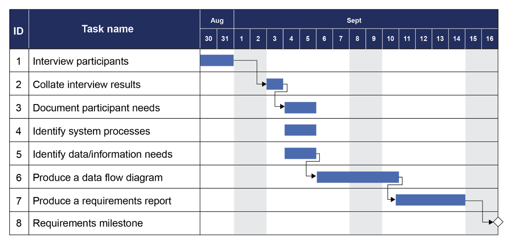
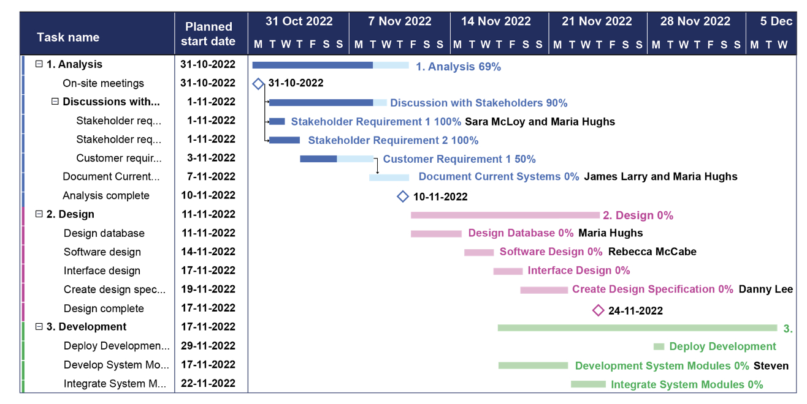

Syllabus
Apply project management to plan and conduct the development and implementation of a project and software engineering solution, including:
- scheduling and tracking using a software tool, including Gantt charts
- using collaboration tools
Learning Intention and Success Criteria
Learning Intention - Students will:
- Understand how to apply project management principles, including scheduling, tracking, and collaboration tools, to plan, develop, and implement a software engineering project.
Success Criteria - Students can:
- Identify key tasks and milestones and organise them using a Gantt chart.
- Effectively use software tools to track project progress and adjust timelines as necessary.
- Utilise collaboration tools to communicate, share files, and manage version control within a software development team.
Content
When working on any software engineering project, it is essential to apply sound project management principles to ensure the development and implementation of the solution is both efficient and effective. Project management helps to organise the tasks, resources, and timeframes needed to bring a project from conception to completion. It involves planning, executing, and tracking progress while balancing constraints such as scope, time, cost, and quality.
A successful software engineering project often involves multiple stakeholders, team members, and potentially complex workflows. Managing these elements requires tools and methodologies that streamline communication, track progress, and ensure deadlines are met. Two key aspects of this are scheduling and tracking the project's progress, and using collaboration tools that allow team members to work together seamlessly.
Scheduling Tools
Project scheduling involves identifying and outlining the tasks and milestones that need to be completed and setting deadlines to ensure everything is accomplished in a timely manner. It’s important to define each phase of the project, including planning, development, testing, and implementation.
To track the progress of a project, software tools are used to monitor deadlines and completion rates. One of the most commonly used tools is Gantt charts, which are visual representations of a project timeline.
Gantt charts:
- A Gantt chart is a type of bar chart that illustrates the start and finish dates of various tasks within a project.
- Tasks are represented by horizontal bars, and the length of the bar reflects the duration of the task.
- The chart shows task dependencies (which tasks must be completed before others can start), which helps in identifying critical paths—essential task sequences that directly affect the project timeline.
- Gantt charts can also highlight overlapping tasks, helping to identify which phases of the project can run simultaneously to maximise efficiency.
- The use of Gantt charts aids project managers in keeping track of deadlines, ensuring that team members are aware of their responsibilities, and providing an overview of the project’s status at any given time.
A variety of project management software, such as Microsoft Project, Asana, Trello, and Jira, include built-in Gantt chart features or allow for their creation. These tools also allow for continuous updates to reflect changes in task statuses, making them dynamic and responsive to the evolving nature of software projects.
The following diagram shows the main elements of a Gantt chart. Other formats are acceptable. (Examples from Course Specifications)

Gantt charts can also be used to allocate resources, including team members, to specific tasks. The following chart shows the percentage completion of tasks by each team member. Charts should be regularly updated during development to reflect actual versus estimated times for tasks.

Collaboration Tools
In the context of modern software engineering projects, especially when teams are distributed across different locations or working remotely, collaboration tools play a crucial role in maintaining clear communication, coordination, and productivity.
Collaboration tools are designed to help teams share information, files, and updates in real-time. Some key features of these tools include:
- File sharing: The ability to store and share files among team members, ensuring everyone has access to the latest version of documents, code, and design materials.
- Version control: Managing and tracking changes to code and documents to prevent conflicts or duplication of effort. Tools like GitHub or Bitbucket are essential for managing source code in software development projects.
- Task management: Tools such as Jira, Trello, or Asana allow project managers to assign tasks to individuals, set priorities, and track progress. These platforms often include features like to-do lists, notifications, and status updates.
- Communication: Tools like Slack, Microsoft Teams, and Zoom enable real-time messaging, video calls, and file sharing, ensuring team members can communicate efficiently.
- Documentation: Platforms such as Confluence or Google Docs allow teams to collaborate on writing and editing project documentation, ensuring that project plans, requirements, and other critical information are up-to-date and accessible.
Effective collaboration tools are not only about sharing files or communicating but also about fostering a sense of teamwork and alignment on the project's goals. These tools often integrate with scheduling and tracking software to provide a comprehensive project management system that brings together task tracking, communication, and progress monitoring.
Applying Project Management
The successful development and implementation of a software engineering solution rely heavily on structured project management. Each phase of the project requires careful planning, task assignment, progress tracking, and collaboration to meet deadlines and deliver a functional product that meets the project goals
Key Tips
- Gantt Charts: Plan timelines and track task dependencies.
- Regular Tracking: Monitor progress and adjust as needed.
- Effective Collaboration: Use real-time tools for communication and version control.
- Adaptability: Stay flexible to manage delays or issues.
- Frequent Testing: Test throughout the project to catch problems early.
Project Planning
- Define Project Scope: Clearly outline the goals and objectives of the software solution. This includes identifying the key features, functionalities, and limitations of the software, as well as any specific user or stakeholder requirements.
- Break Down the Project: Decompose the project into phases or milestones. Common phases in software engineering projects include requirements gathering, system design, development, testing, and deployment. Each phase should be clearly defined with specific goals and deliverables.
- Create a Detailed Timeline: Use a tool like a Gantt chart to visually represent the timeline of the project. Tasks are laid out along a timeline, showing when they start and finish. Each task should have a clear duration and deadline. Make sure to establish key milestones, such as project reviews or delivery of prototypes, so progress can be measured at each stage.
Task Assignment and Scheduling
- Assign Roles and Responsibilities: Identify the specific tasks that need to be accomplished and assign them to team members according to their expertise and capacity. Ensure everyone understands their responsibilities and the deadlines associated with each task.
- Set Task Dependencies: In any project, some tasks are dependent on others being completed first. For example, testing cannot begin until coding is complete. Use Gantt charts or similar scheduling tools to highlight task dependencies, ensuring that delays in one area don’t cascade across the project.
- Set Realistic Deadlines: Establish clear start and end dates for each task. Consider the team’s workload, the complexity of each task, and potential bottlenecks when setting deadlines. Adjust the schedule when necessary to avoid overloading team members or unrealistic timeframes.
Progress Tracking
- Regularly Monitor Progress: Project management software like Jira, Asana, or Microsoft Project allows the team to update the status of tasks, marking them as "in progress," "completed," or "pending." The project manager can track progress using reports and dashboards, making it easy to identify if the project is on schedule or falling behind.
- Track Task Completion: Gantt charts can help visualise which tasks are completed, in progress, or delayed. This allows project managers to identify any risks or delays that might require intervention.
- Identify Risks and Adjust: Regularly review the project timeline and adjust where necessary. If a task is delayed, identify the cause and reallocate resources or shift deadlines to prevent further delays. Look out for tasks on the critical path, as delays here could impact the overall project completion date.
Collaboration and Communication
- Set Up a Shared Workspace: Use collaboration tools like Slack, Microsoft Teams, or Confluence to create a shared space where team members can communicate, share documents, and track tasks. This ensures everyone is working with the most up-to-date information.
- Real-Time Communication: Effective communication is key in software projects, especially when dealing with distributed teams or remote workers. Real-time messaging platforms like Slack or Microsoft Teams enable instant communication, reducing the lag that can occur with email.
- Use Version Control: In software development, using version control tools like Git (through GitHub or Bitbucket) ensures that the team can collaborate on code without conflicts. Version control allows multiple team members to work on different parts of the codebase at the same time, track changes, and merge updates without overwriting anyone’s work.
- Maintain Transparency: Use tools to keep all team members and stakeholders updated on the project’s status. Progress reports, shared timelines, and regular meetings ensure everyone has visibility into the current state of the project, upcoming tasks, and any issues that need addressing.
Quality Assurance and Testing
- Plan for Testing Phases: Schedule specific periods for testing within the project timeline. Testing should not be an afterthought but an integral part of the development process. Testing phases may include unit testing, integration testing, system testing, and user acceptance testing.
- Bug Tracking and Resolution: Use bug-tracking tools like Jira or Bugzilla to log issues encountered during testing. Assign each bug or issue to a relevant team member for resolution and track its progress to ensure it’s resolved before the final product is delivered.
- Collaboration in Testing: Testing often involves collaboration between the development team and other stakeholders, such as quality assurance teams or end-users. Use collaboration tools to facilitate feedback loops and ensure test results and issues are communicated promptly.
Project Review and Reflection
- Post-Project Analysis: Once the project is complete, conduct a post-project review to evaluate the process. Analyse what worked well, what challenges were encountered, and how effectively the team applied project management techniques.
- Documentation: Maintain clear documentation of the project’s development, including how challenges were addressed, which tools were most effective, and what could be improved in future projects. Good documentation helps future teams learn from past projects and improves overall organisational efficiency.
Theory
- Direct the students to an activity to be completed in their OneNote
Practical
- Provide instructions for a practical activity or direct the students to an EdStem activity
Sources
- List sources here